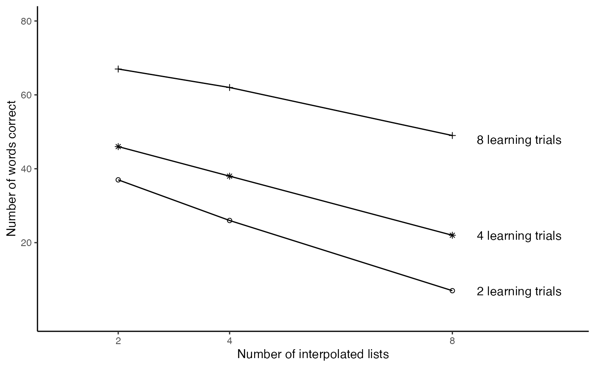
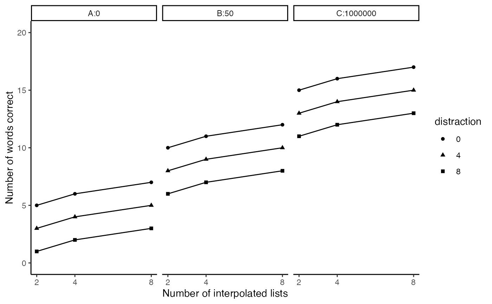

Lab2.Rmd
library(tidyr)
library(ggplot2)
slamecka_design <- tibble(number_of_learning_trials = rep(c(2,4,8), each=6),
number_of_IL = rep(rep(c(2,4,8), 2), 3),
subjects = 1:18,
recall = c(35,21,6,
39,31,8,
40,34,18,
52,42,26,
61,58,46,
73,66,52
)
)
slamecka_design$number_of_learning_trials <- as.factor(slamecka_design$number_of_learning_trials)
ggplot(slamecka_design,aes(x=number_of_IL,
group = number_of_learning_trials,
y=recall,
shape=number_of_learning_trials))+
geom_line(stat = "summary", fun = "mean")+
geom_point(stat = "summary", fun = "mean", show.legend = FALSE)+
xlab("Number of interpolated lists")+
ylab("Number of words correct")+
scale_y_continuous(breaks=c(20,40,60,80), limits=c(0,80))+
scale_shape_manual(values=c(1, 8, 3))+
theme(legend.position= "none")+
scale_x_continuous(breaks=c(2,4,8), limits = c(1,10))+
annotate("text", x = 9.2, y = 48, label = "8 learning trials")+
annotate("text", x = 9.2, y = 22, label = "4 learning trials")+
annotate("text", x = 9.2, y = 7, label = "2 learning trials")+
theme_classic()
Use R to create a dataframe to represent predictions for this new 3x3x3 design. Then use ggplot and facet wrapping to show predicted means for each condition. As a hint, I have provided a drawing and I expect your ggplot graph will look something like this drawing.
new_data <- tibble(reward = rep(c("A:0","B:50","C:1000000"), each = 9),
practice = rep(rep(c(2,4,8), each = 3),3),
distraction = as.factor(rep(c(0,4,8),9)),
recall = c(5,3,1,
6,4,2,
7,5,3,
10,8,6,
11,9,7,
12,10,8,
15,13,11,
16,14,12,
17,15,13
)
)
ggplot(new_data,aes(x=practice,
group = distraction,
y=recall,
shape=distraction))+
geom_line()+
geom_point()+
theme_classic()+
xlab("Number of interpolated lists")+
ylab("Number of words correct")+
scale_y_continuous(breaks=c(0,5,10,15,20), limits=c(0,20))+
scale_x_continuous(breaks=c(2,4,8))+
facet_wrap(~reward)